Association Between Gene Expression and Cytosine DNA Methylation at gene-body
09 June 2020
Source:vignettes/GenExp_Methylation_association_hyper_down-regulated.Rmd
GenExp_Methylation_association_hyper_down-regulated.RmdAbstract
This document is Supplementary Information for the manuscript: “Segregation of an MSH1 RNAi transgene produces heritable non-genetic memory in association with methylome reprogramming” (Yang et al. 2020). Statistical analysis supporting the association between gene expression and cytosine DNA methylation at gene-body is provided.
Background
The classical statistical approach to analyze the association between two variables is based in correlation tests. However, small or zero correlation coefficient does not necessarily implies independence of the tested variables/processes and, consequently, does not implies the lack of association at all. There various steps involved in investigating the dependence between two random variables. The state of the art include the application of copula distributions. Herein, we provide study of the statistical dependence structure between gene expression and methylation in memory line. To uncover the association between gene expression and cytosine DNA methylation, first, the probability distributions of gene expression (in terms of logarithm of fold changes: logFC) and methylation divergences are estimated.
Next, the joint probability distribution is estimated, expressed in term of copula distribution. All the analyses are performed in R and can be reproduced as presented here. The association is investigated with the application of copula distributions.
Required R packages
With the exception of usefr R package, all the packages are available in Bioconductor and in CRAN repository. Package usefr is available in GitHub at https://github.com/genomaths/usefr You can install usefr package from GitHub typing the following command in the R console:
devtools::install_git("https://github.com/genomaths/usefr.git")
Analysis for down-regulated genes
Data sets
Gene expression data sets were derived using the R package edgeR. All the genes with the minimal quality of gene expression differences are included in the analyses. That is, to evaluate the existence of an association between gene expression and cytosine methylation all the genes with meaningful expression and methylation values must be included, regardless they would be differentially methylated and/or differentially expressed or not.
Gene expression data for Arabidopsis Memory first generation (G1)
## ===== Download methylation data from Github ======== url <- paste0("github.com/genomaths/genomaths.github.io/raw/master/supp-inf/", "mm_nm_wt_transgen_meth_density_and_gene-exp_at_genes_06-01-19.", "RData") temp <- tempfile(fileext = ".RData") download.file(url = url, destfile = temp) load(temp) file.remove(temp); rm(temp, url)
## Gene expresion data set deg_mm1_wt1
## An object of class "DGEExact"
## $table
## logFC logCPM PValue adj.pval
## AT1G01010 -0.60092985 3.066880 9.377730e-05 0.0004180724
## AT1G01020 -0.60729200 2.913263 2.803733e-05 0.0001409788
## AT1G01030 -0.25438232 -1.478816 5.857299e-01 0.6890000078
## AT1G01040 0.03597925 5.632805 7.833824e-01 0.8505857888
## AT1G01046 -1.61271935 -2.996378 2.235591e-02 0.0498548032
## 20284 more rows ...
##
## $comparison
## [1] "WT1" "MM1"
##
## $genes
## genes.seqnames genes.start genes.end genes.strand genes.type
## AT1G01010 1 3631 5899 + gene
## AT1G01020 1 6788 9130 - gene
## AT1G01030 1 11649 13714 - gene
## AT1G01040 1 23121 31227 + gene
## AT1G01046 1 28500 28706 + gene
## genes.gene_biotype genes.gene_id genes.gene_name length
## AT1G01010 protein_coding AT1G01010 NAC001 2269
## AT1G01020 protein_coding AT1G01020 ARV1 2343
## AT1G01030 protein_coding AT1G01030 NGA3 2066
## AT1G01040 protein_coding AT1G01040 DCL1 8107
## AT1G01046 miRNA AT1G01046 MIR838A 207
## 20284 more rows ...Methylation dataset contains the densities of methylation levels from control (Col-0) and Memory lines samples at DMP on gene-body regions. Densities were computed using function getGRegionsStat from the R package MethylIT.utils.
Methylation data for a memory G1 sample
dmp_den_genes[, "M_1_105"]
## GRanges object with 33164 ranges and 1 metadata column:
## seqnames ranges strand | M_1_105
## <Rle> <IRanges> <Rle> | <numeric>
## AT1G01010 1 3631-5899 * | 0.841607
## AT1G01020 1 6788-9130 * | 0.389668
## AT1G03987 1 11101-11372 * | 0.000000
## AT1G01030 1 11649-13714 * | 0.000000
## AT1G01040 1 23121-31227 * | 6.776141
## ... ... ... ... . ...
## AT5G09945 5 26966885-26967079 * | 0.00000
## AT5G67630 5 26967378-26969400 * | 1.28801
## AT5G67640 5 26969516-26970668 * | 0.00000
## AT5G09955 5 26971389-26971689 * | 1.05172
## AT5G09965 5 26972177-26972644 * | 0.00000
## -------
## seqinfo: 5 sequences from an unspecified genome; no seqlengthsDataset for the first generation
The analysis will be performed with Memory line (M1) and wild type (WT1) control, both of them, MM1 and WT1, first generation G1.
idx <- na.omit(match(rownames(deg_mm1_wt1), names(dmp_den_genes))) dmp_den_m1 <- dmp_den_genes[idx, c("M_1_105", "M_1_168", "M_1_179", "M_1_27", "M_1_3")] dmp_den_wt1 <- dmp_den_genes[idx, c( "W_1_1", "W_1_3", "W_1_4", "W_1_5")]
The means of methylation levels densities are computed for each group
mcols(dmp_den_wt1) <- rowMeans(as.matrix(mcols(dmp_den_wt1))) mcols(dmp_den_m1) <- rowMeans(as.matrix(mcols(dmp_den_m1)))
The absolute difference of the group density means of methylation levels between control (Col-0) and Memory lines at gene-body regions (G1).
dmp_den_wt1_mm1 <- dmp_den_m1 mcols(dmp_den_wt1_mm1) <- as.matrix(mcols(dmp_den_m1)) - as.matrix(mcols(dmp_den_wt1)) colnames(mcols(dmp_den_wt1_mm1)) <- "dmp_den" idx <- which(dmp_den_wt1_mm1$dmp_den > 0) dmp_den_wt1_mm1 <- dmp_den_wt1_mm1[idx] dmp_den_wt1_mm1
## GRanges object with 20022 ranges and 1 metadata column:
## seqnames ranges strand | dmp_den
## <Rle> <IRanges> <Rle> | <numeric>
## AT1G01010 1 3631-5899 * | 0.734204
## AT1G01020 1 6788-9130 * | 0.304498
## AT1G01030 1 11649-13714 * | 0.180618
## AT1G01040 1 23121-31227 * | 6.571474
## AT1G01046 1 28500-28706 * | 2.597185
## ... ... ... ... . ...
## AT4G40060 4 18571239-18573084 * | 0.166230
## AT4G40065 4 18574503-18575585 * | 0.121346
## AT4G40070 4 18576216-18577774 * | 0.151446
## AT4G40085 4 18579194-18580702 * | 0.161783
## AT4G40080 4 18579314-18580717 * | 0.141613
## -------
## seqinfo: 5 sequences from an unspecified genome; no seqlengthsFinal variables: |group means density differences| and \(|logFC|\). For the sake of brevity and clarity, we shall call the first variable: divergence of methylation densities or simply methylation divergence (\(MD\)).
.deg_mm1_wt1 <- deg_mm1_wt1[match(names(dmp_den_wt1_mm1), rownames(deg_mm1_wt1)), ] MD <- dmp_den_wt1_mm1$dmp_den # Methylation (|group mean density differences|) idx <- which(.deg_mm1_wt1$table$logFC < 0 ) # Down-regulated logFC <- abs(.deg_mm1_wt1$table$logFC[idx]) # Gene Expression (|logFC|) MD <- MD[idx] DataFrame(MD,logFC)
## DataFrame with 13962 rows and 2 columns
## MD logFC
## <numeric> <numeric>
## 1 0.734204 0.600930
## 2 0.304498 0.607292
## 3 0.180618 0.254382
## 4 2.597185 1.612719
## 5 0.823158 0.515993
## ... ... ...
## 13958 0.383503 0.371768
## 13959 0.532277 0.136153
## 13960 0.166230 0.201576
## 13961 0.161783 0.115828
## 13962 0.141613 1.628195There are 13962 genes to be included in the downstream analysis.
Distribution of the divergence of methylation level density at gene-body. MM1 vs WT1
Searching for the best fitted distribution functions by using R functions fitdistr from MASS R package and fitCDF from usefr R package did not yield a suitable results. The best fitted model was found for a mixture distribution model obtained with the function fitMixDist from usefr R package.
The best fitted model for \(MD\), from comparison MM1 vs WT1, was a mixture of Log-Normal and Weibull distributions.
x <- MD[ MD > 0] # Weibull distribution is defineed for MD > 0. meth_FIT <- fitMixDist(X = x, args = list(lnorm = c(meanlog = 2.3, sdlog = 0.7), weibull = c(shape = 0.5, scale = 2)), dens = TRUE, npoints = 900)
## fitting ...
##
|
| | 0%
|
|=================================== | 50%
|
|======================================================================| 100%
## *** Performing nonlinear regression model crossvalidation...summary(meth_FIT$fit)
##
## Parameters:
## Estimate Std. Error t value Pr(>|t|)
## lnorm.meanlog -1.090124 0.005904 -184.65 <2e-16 ***
## lnorm.sdlog 0.654024 0.004619 141.60 <2e-16 ***
## weibull.shape 1.798669 0.019043 94.45 <2e-16 ***
## weibull.scale 1.496789 0.009544 156.83 <2e-16 ***
## ---
## Signif. codes: 0 '***' 0.001 '**' 0.01 '*' 0.05 '.' 0.1 ' ' 1
##
## Residual standard error: 0.01926 on 1022 degrees of freedom
## Number of iterations to termination: 27
## Reason for termination: Relative error in the sum of squares is at most `ftol'.cat("\n Mixture proportions (phi):", meth_FIT$phi)
##
## Mixture proportions (phi): 0.4118521 0.5881479The graphic for histogram and density distribution curves:
par(mar = c(4, 4, 2, 1), font.lab=2, font=2,font.axis=2,family="serif" , lwd = 1.2, cex = 1.4) hist(x, 240, freq = FALSE, las = 1, #ylim = c(0, 0.021), cex = 1, panel.first={points(0, 0, pch=16, cex=1e6, col="grey95") grid(col="white", lty = 1)}, main = text, cex.main = 0.9, xlim = c(0, 5), family = "serif", col = "cyan1", border = "deepskyblue", xaxt ="n", yaxt = "n", ann = FALSE) axis(1, padj = -1, las = 1, lwd = 0.8, tck = -0.02) axis(2, hadj = 0.7, las = 1, lwd = 0.8, tck = -0.02) mtext(side = 1, text = "Divergence of methylation level density at gene-body", line = 1.6, cex = 1.4, font = 3) mtext(side = 2, text = "Density distribution", line = 2.1, cex = 1.4, font = 3) mtext("(Log-Normal & Weibull Mixture Dists.)", cex = 1.4, font = 3) x1 <- seq(0, 10, by = 0.01) lines(x1, dmixtdistr(x1, phi = meth_FIT$phi, arg = meth_FIT$args), col = "blue")
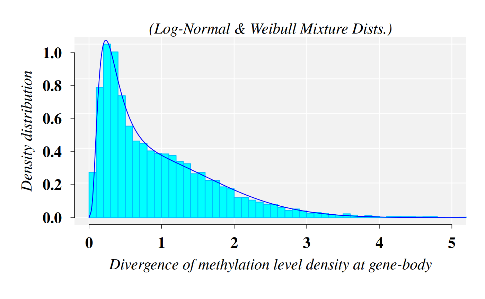
Distribution of the \(|logFC|\). MM1 vs WT1
The best fitted model for the \(|logFC|\), from comparison MM1 vs WT1, was a mixture of Gamma and Weibull distributions. Function fitMixDist calls the mixture function models set up in function mixtdistr
x <- logFC[ logFC > 0 ] gexp_FIT <- fitMixDist(X = x, args = list(gamma = c(shape = 2, scale = 0.41), weibull = c(shape = 2, scale = 0.4)), dens = TRUE, npoints = 900)
## fitting ...
##
|
| | 0%
|
|=================================== | 50%
|
|======================================================================| 100%
## *** Performing nonlinear regression model crossvalidation...summary(gexp_FIT$fit)
##
## Parameters:
## Estimate Std. Error t value Pr(>|t|)
## gamma.shape 1.694450 0.011447 148.03 <2e-16 ***
## gamma.scale 0.238469 0.002183 109.22 <2e-16 ***
## weibull.shape 0.662990 0.012056 54.99 <2e-16 ***
## weibull.scale 0.813737 0.041746 19.49 <2e-16 ***
## ---
## Signif. codes: 0 '***' 0.001 '**' 0.01 '*' 0.05 '.' 0.1 ' ' 1
##
## Residual standard error: 0.02757 on 937 degrees of freedom
## Number of iterations to termination: 18
## Reason for termination: Relative error in the sum of squares is at most `ftol'.cat("\n Mixture proportions (phi):", gexp_FIT$phi)
##
## Mixture proportions (phi): 0.7850078 0.2149922The graphic for histogram and density distribution curves:
par(mar = c(3, 3, 2, 1), font.lab=2, font=2,font.axis=2,family="serif", lwd = 1.2, cex = 1.4) hist(x, 200, freq = FALSE, las = 1, #ylim = c(0, 0.021), cex = 1, panel.first={points(0, 0, pch=16, cex=1e6, col="grey95") grid(col="white", lty = 1)}, main = text, cex.main = 0.9, xlim = c(0, 4), family = "serif", col = "cyan1", border = "deepskyblue", xaxt ="n", yaxt = "n", ann = FALSE) axis(1, padj = -1.5, las = 1, lwd = 0.5, tck = -0.02) axis(2, hadj = 0.4, las = 1, lwd = 0.5, tck = -0.02) mtext(side = 1, text = expression(italic(abs(logFC))), line = 1.3, cex = 1.4, font = 3) mtext(side = 2, text = "Density distribution", line = 1.6, cex = 1.4, font = 3) mtext("(Gamma & Weibull Mixture Dists.)", cex = 1.4, font = 3) x1 <- seq(0, 10, by = 0.01) lines(x1, dmixtdistr(x1, phi = gexp_FIT$phi, arg = gexp_FIT$args), col = "blue")
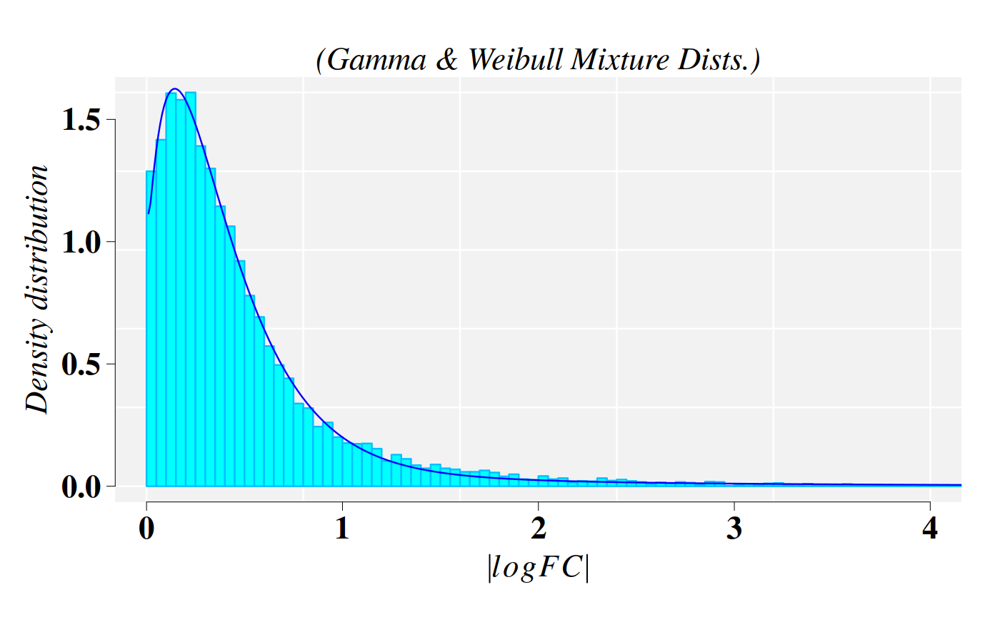
Joint distribution of \(MD\) and \(|logFC|\) expressed in terms of Copula distribution.
There various steps involved in investigating the dependence between two random variables. The state of the art in this subject include the application of copula distributions.
Sklar’s theorem ((Sklar 1959, 1973)) named after Abe Sklar, provides the theoretical foundation for the application of copulas. Sklar’s theorem states that every multivariate cumulative distribution function (CDF):
\[H(x_1, ..., x_d)=Pr(X_1 \leq x_1, ..., X_d \leq x_d)\]
of any \(d-tuple\) of continuous random variables \((X_1, ..., X_d)\) can be expressed in terms of its marginals CDFs: \(F_i(x_i)=Pr(X_i \leq x_i)\) a copula \(C\):
\[H(x_1, ..., x_d)=C(F_1(x_1), ..., F_d(x_d))\] While Sklar showed that \(C\) and \(F_i\) are uniquely determined when H is known, a valid model for \((X_1, ..., X_d)\) arises from the last equation whenever the “ingredients” are chosen from given parametric families of distribution ((Christian and Favre 2007)): \[F \in (F_\delta), C \in (C_\alpha)\]
Current literature on copula theory provides abundant information on models and copula families. Here, for the particular case of bi-dimensional copula defined for \(MD\) and \(|logFC|\), we have chosen Farlie–Gumbel–Morgenstern family of copulas, which are defined for, each \(\theta \in [-1, 1]\) by: \[C_\alpha(u, v)=uv+\alpha uv(1-u)(1-v)\] \(u,v \in [0,1]\). The correlation coefficient \(\rho\) is linked to \(\alpha\) by the relationship: \(\rho=\frac{\alpha}{3}\), which ranges from \(-\frac{1}{3}\) to \(\frac{1}{3}\), where \(u=F(x)\), \(v=G(y)\), with marginal CDFs: \(F(x)\) and \(G(y)\).
Fitting Farlie–Gumbel–Morgenstern copulas with \(MD\) and \(|logFC|\) marginal CDFs
The first step requires for provide the parameters values, previously estimated, of the marginal distributions, which were given throughout the function mixtdistr. The the specific parameter values are retrieved from the previous nonlinear fit obtained for the marginal CDFs:
margins = c("mixtdistr", "mixtdistr") parMargins = list( list(phi = meth_FIT$phi, arg = meth_FIT$args), list(phi = gexp_FIT$phi, arg = gexp_FIT$args))
The parameter estimation and goodness-of-fit (GOF) test take advantages of the tools available in the R package copula. Both, parameter estimation and GOF, can be accomplished with function bicopulaGOF from the R package usefr.
fgm_cop <- bicopulaGOF(x = MD, y = logFC, copula = "fgmCopula", sample.size = 13000, margins = margins, paramMargins = parMargins, nboots = 10, approach = "chisq", breaks = 30, num.cores = 6L, seed = 123, verbose = FALSE)
The null hypothesis that the data follows FGM copula distribution is not rejected.
fgm_cop$gof
## Chisq.stat mc_p.value sample.size num.sampl
## 1.117630e+03 3.636364e-01 1.300000e+04 1.000000e+01All the information needed about the fitted FGM copula is found in the object fgm_cop$copula, which is a mvdc object from copula package with several slots. In particular, the specific information about FGM copula is found in:
fgm_cop$copula@copula
## Farlie-Gumbel-Morgenstern (FGM) copula, dim. d = 2
## param.: -0.509
## Dimension: 2
## Parameters:
## alpha1.2 = -0.5091988P-P plot. Graphical Diagnostics of GOF
The P-P plot is build with function ppCplot from the R package usefr. If the GOF is good enough, then it is expected that points in the graphics are closed to the diagonal (red) straight line. Details on how the computation is performed are provided in the help for function. ppCplot.
g <- ppCplot(X = MD, Y = logFC, copula = fgm_cop$copula, npoints = 500, col = "blue", cex = 0.5)
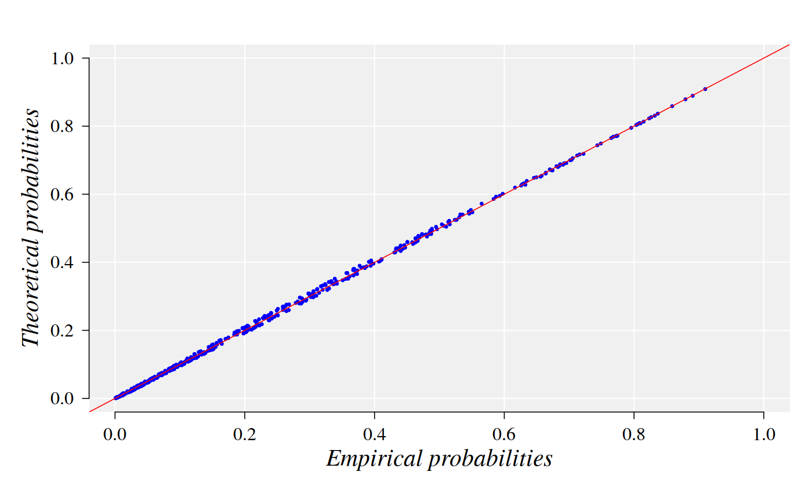
Information on the data and copula used to yield the graphic are stored in the output variable “g”. For example, the empirical and theoretical probabilities used to built the graphic can be retrieved from the data frame: “g$data”:
DataFrame(g$data)
## DataFrame with 500 rows and 2 columns
## emprob thprob
## <numeric> <numeric>
## 1 0.0883111 0.0891192
## 2 0.1122332 0.1166156
## 3 0.1044979 0.1113336
## 4 0.1231915 0.1227386
## 5 0.2043404 0.1983296
## ... ... ...
## 496 0.00286492 0.00296597
## 497 0.28348374 0.29297292
## 498 0.08594757 0.08300681
## 499 0.49011603 0.49912347
## 500 0.39671967 0.39261157Three-dimensional copula density plot
The domain region \((X, Y)\) is defined and function dMvdc is used to compute the density \(z\) in the grid \([X,Y] \times [X,Y]\) using the previous FMG fitted copula.
X = seq(0, 1.5, length = 100) Y = seq(0, 1.5, length = 100) sp_rho <- round(rho(fgm_cop$copula@copula),3) # Spearman's rho: -0.171 z <- outer(X, Y, function(x,y) dMvdc(cbind(x,y),fgm_cop$copula)) * 4 phi = 20; theta = 45 zf <- function(x,y) dMvdc(cbind(x,y),fgm_cop$copula) * 3.2 cat("Spearman's rho = ", sp_rho)
## Spearman's rho = -0.17An auxiliary function to draw the panels
panelfirst <- function(pmat) { par(mfrow = c(1, 1),mar=c(4,7,0, 1), font=2,lwd = 0.01, cex =1, family = "serif") YZ <- trans3D(x = rep(0, ncol(z)), Y, z[18,], pmat = pmat) scatter2D(YZ$x, YZ$y, colvar = z[18,], lwd = 1, type = "l", add = TRUE, colkey = FALSE) XZ <- trans3D(x = X, y = rep(max(Y), nrow(z)), z = z[, 12], pmat = pmat) scatter2D(XZ$x, XZ$y, colvar = z[, 12], lwd = 1, type = "l", add = TRUE, colkey = FALSE) }
The graphical settings depend on the final printing destiny and on the dataset.
par(mfrow = c(1, 1),mar=c(4,7,0, 1), font=2,lwd = 0.1, cex =1, family = "serif") persp3D(X, Y, z, lwd = 0.01, image = TRUE, xlab = "", ylab = "", zlab = "", family = "serif", box = T, panel.first = panelfirst, bty = "u", col.panel = "steelblue", col.grid = "black", lwd.grid = 0.5, contour = list(col = "black", side = "zmin", lwd = 0.4), ticktype = "detailed", clab = "", expand = 0.7, d = 2, phi = phi, theta = theta, resfac = 2.5, cex.lab = 1, lwd = 0.005, xlim = c(0, 1.5), zlim = c(-5, 6), font=2, cex.axis = 1.2, colkey = list(length = 0.7, width = 0.6, col.ticks = "black", lwd = 0.01, font=2, shift = 0, dist = 0, lwd.ticks = 0.01, cex.clab = 1.2, cex.axis = 1, line = -0.8)) text(0.38,-0.48, srt = 34, labels = expression(paste("|", italic(log[2]), italic(FC), "|")), xpd = TRUE,font = 2, cex = 1.2) text(-0.3,-0.44, srt = -28, labels = expression(paste(italic("MD"))), xpd = TRUE, font=2, cex = 1.2) text(-0.3,-0.6, srt = 0, labels = expression(paste("Spearman' s ", italic(rho), ": ", -0.17)), xpd = TRUE, font = 1, cex = 1)
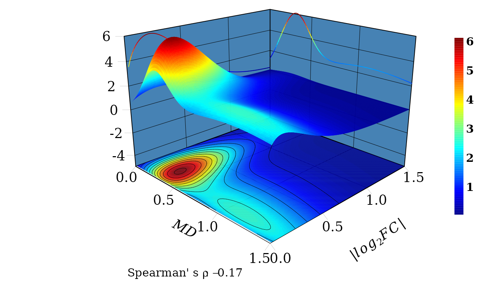
The marginal distribtuions are drawn in the \(XZ\) and \(YZ\) vertical planes. Consistent with the Spearman’ s \(\rho=-0.17\), for a fixed value of \(|log_2FC|\), (a line parallel to \(MD\) axis) the joint probability density distribution function \(f(X \leq MD, Y \leq |log_2FC|)\) decreases with the increment of \(MD\). That is, the probability to observe DEGs with values, say between 0.1 and 0.5,
\(0.1 \leq |log_2FC| \leq 0.5\), is greater for \(0.1 \eq MD \leq 0.5\) than for \(0.5 < MD \leq 1\).
Two-dimensional copula density plot, Contour plot
The 2D-dimensional plot permits to see in more detail the projection of the density surface on the \(XY\) plane and contour lines.
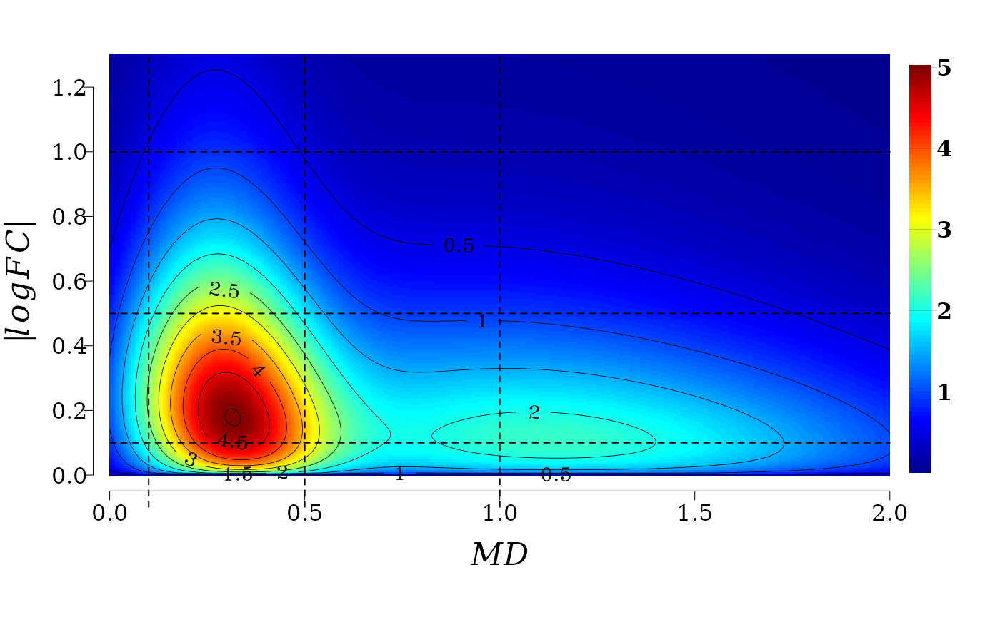
It is not difficult to see that for a fixed value of \(MD\) (a line parallel to \(|log_2FC|\) axis) the joint probability density distribution function \(f(X \leq MD, Y \leq |log_2FC|)\) (color gradient from red to blue) decreases with the increment of \(|log_2FC|\). That is, the probability to observe \(MD\) values, say between 0.1 and 0.5 (see the squared region below) \(0.1 \leq MD \leq 0.5\), is greater for \(0.1 \leq |log_2FC| \leq 0.5\) than for \(0.5 < |log_2FC| \leq 1\).
In summary, gene expression and methylation processes (2kb upstream gene TSS regions) are not independent in memory line first generation. There exist an stochastic deterministic dependence between \(|log_2FC|\) and \(MD\) that can be expressed in terms joint probability distribution, which leads to an inverse relationship between the conditioned expected values \(|log_2FC|\) given \(MD\), and vice versa. This association is, however, weaker than the association found for gene expression and methylation at gene body.
Asymptotic linear-by-linear association test
The above 3D and 2D density plots and results suggest that most of the genes have low \(|logFC|\) and low \(MD\), and the number of genes decrease for middle levels of \(|logFC|\) and \(MD\). This observation leads to the application of a linear-by-linear association test.
The linear-by-linear test (LLT) is used to test a linear association among variables in a contingency table with ordered categories (Agresti (2007)). The null hypothesis for the linear-by-linear test is that there is no association among the variables in the table.
It is obvious from the 2D density plots that a relationship for \(MD\) < 0.08 is not meaningful. In particular, both variables, \(|logFC|\) and \(MD\), are at the level of technical noise. The percentage of the genes at noise level are:
## [1] 1.78Hence, the genes considered in the downstream analysis are:
idx <- which(MD > 0.08) md <- MD[ idx] logfc <- logFC[ idx ] dt <- data.frame(md = md , logfc = logfc) nrow(dt)
## [1] 13714Discretization of \(MD\) and \(|logFC|\)
To apply the LLT the values of \(|logFC|\) and \(MD\) must be discretized into ordinal values. A K-means discretization approach is applied with following auxiliary function
# ------------------- Auxiliary function for discretization ------------------ # Kmean.discretization <- function(x, categories, algorithm = "Hartigan-Wong", iter.max = 10^6, column = 1L) { centers <- kmeans(x, centers = categories, algorithm = algorithm, iter.max = iter.max)$centers # order the centers centers <- sort(centers) cl <- stats::kmeans(stats::na.omit(x), centers = centers, algorithm = algorithm, iter.max = iter.max ) return( data.frame(x, cluster = cl$cluster) ) }
Discretization for \(MD\)
cl = Kmean.discretization(md, categories = 3, algorithm = "MacQueen" ) cl_summary <- sapply(1:3, function(k) summary(cl$x[cl$cluster == k])) colnames(cl_summary) <- c("low", "middle", "high") cl_summary
## low middle high
## Min. 0.08010906 0.9747216 2.342326
## 1st Qu. 0.25324833 1.1864777 2.553813
## Median 0.39765342 1.4393783 2.849022
## Mean 0.44924279 1.5001513 3.182966
## 3rd Qu. 0.62903372 1.7719768 3.410265
## Max. 0.97438946 2.3393763 20.519587Cutpoint are now applied:
Discretization for \(|logFC|\)
cl = Kmean.discretization(logfc, categories = 3, algorithm = "MacQueen" ) cl_summary <- sapply(1:3, function(k) summary(cl$x[cl$cluster == k])) colnames(cl_summary) <- c("eLow", "eMiddle", "eHigh") cl_summary
## eLow eMiddle eHigh
## Min. 2.270881e-05 0.6366017 1.835555
## 1st Qu. 1.345836e-01 0.7410084 2.070626
## Median 2.526246e-01 0.9079608 2.399485
## Mean 2.729755e-01 0.9997545 2.671355
## 3rd Qu. 4.015427e-01 1.1817728 2.905358
## Max. 6.360073e-01 1.8328136 9.407983The contingency table and its graphic visualization
In the current case, the contingency table suggests an obvious relationship between \(|logFC|\) and \(MD\).
##
## Low Middle High
## eLow 5807 3894 765
## eMiddle 1995 630 179
## eHigh 354 69 21The spineplot of this contingency table (table(x = logfc_level, y = md_level)) help to visualize the existent relationship between \(|logFC|\) and \(MD\).
par( mar = c(5, 7, 4, 4), family = "Serif", font = 2, cex = 0.8, las = 1, lwd = 0.2 ) tb <- spineplot(m[, c(3,2,1)], col = c( "blue", "dodgerblue","deepskyblue" ), xlab = "", ylab = "") mtext(side = 1, text = expression(italic(abs(logFC))), line = 2.5, cex = 1, font = 3) mtext(side = 2, text = expression(paste(italic("MD"))), line = 4, cex = 1, font = 3) abline(a = 0.0, b = 0.72, col = "white", lty = "dashed", lwd = 1)
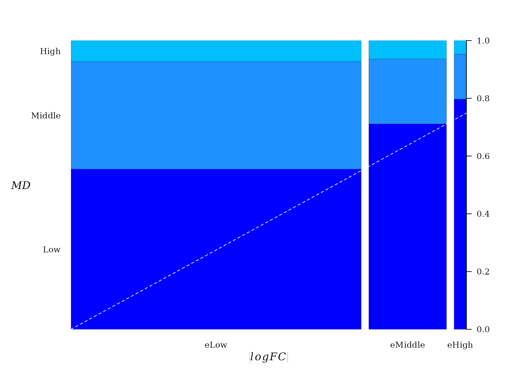
A dashed line was added to emphasize the direction of linear trend. From “Low” to “high” there seems to be a linear relationship between pairwise proportion of \(|logFC|\) and \(MD\).
Conceptually, the spineplot is a plot of the conditional probability \(P(y|x)\) against \(P(x)\). Since the joint probability distribution of these variable is described by a FGM copula, a linear relationship between \(P(y|x)\) against \(P(x)\) must be expected, which is a property of FGM copula (Balakrishna and Lai 2009).
Testing association between \(|logFC|\) and \(MD\)
Here, we use the LLT test implemented in function lbl_test from the R package coin. Two test variants are available: 1) permutation test and asymptotic test.
The asymptotic LLT test:
lbl_test( m )
##
## Asymptotic Linear-by-Linear Association Test
##
## data: Var2 (ordered) by Var1 (eLow < eMiddle < eHigh)
## Z = -14.599, p-value < 2.2e-16
## alternative hypothesis: two.sidedThe permutation LLT test:
lbl_test( m, distribution = "approximate", B = 10000, alternative = "less" )
##
## Approximative Linear-by-Linear Association Test
##
## data: Var2 (ordered) by Var1 (eLow < eMiddle < eHigh)
## Z = -14.599, p-value < 1e-04
## alternative hypothesis: lessThe null hypothesis of no association among the variables in the table is rejected. In the current case the p-value < 1e-04 and, hence, we do not have enough evidence to support the null hypothesis.
Generalized linear model (GLM)
The variable \(MD\) was split into three levels, “0”: “Low” (\(0 < MD \leq 0.5\)), “1”: “Middle” (\(0.5 < MD \leq 1\)), and “2”: “High” ($1 < MD $)
meth_cut <- 1 xy <- cbind(MD, logFC) idx <- which(logFC > 0.5) xy <- data.frame(xy[idx, ]) xy$md <- 0 xy$md[xy$MD > meth_cut] <- 1
The glm support the decrease of \(-logFC\) with th increment of \(MD\). The model coefficients are highly statistically significant.
##
## Call:
## glm(formula = logFC ~ md, family = Gamma(link = "identity"),
## data = xy)
##
## Deviance Residuals:
## Min 1Q Median 3Q Max
## -0.6916 -0.4656 -0.2364 0.1463 3.3044
##
## Coefficients:
## Estimate Std. Error t value Pr(>|t|)
## (Intercept) 1.09233 0.01227 89.030 <2e-16 ***
## md -0.17546 0.02040 -8.602 <2e-16 ***
## ---
## Signif. codes: 0 '***' 0.001 '**' 0.01 '*' 0.05 '.' 0.1 ' ' 1
##
## (Dispersion parameter for Gamma family taken to be 0.4203748)
##
## Null deviance: 1283.8 on 4662 degrees of freedom
## Residual deviance: 1255.4 on 4661 degrees of freedom
## AIC: 6431
##
## Number of Fisher Scoring iterations: 3The ANOVA test confirm the negative trend given by the coefficient of MD (highly statistically significant).
anova(gm, test = "LRT")
## Analysis of Deviance Table
##
## Model: Gamma, link: identity
##
## Response: logFC
##
## Terms added sequentially (first to last)
##
##
## Df Deviance Resid. Df Resid. Dev Pr(>Chi)
## NULL 4662 1283.8
## md 1 28.416 4661 1255.4 < 2.2e-16 ***
## ---
## Signif. codes: 0 '***' 0.001 '**' 0.01 '*' 0.05 '.' 0.1 ' ' 1Boxplot
The boxplot suggest a clear trend of \(-logFC\) decreasing with increment of MD levels. Notice that the notchs from the boxes do not overlap, which implies that the differences between medians from three groups (“Low”, “Middle”, and “High”) are statistically significant. So, the GLM results can be visualized.
par(bty = "n", family = "serif", font = 2, cex = 1, lwd = 0.1, mar = c(4, 5, 2, 1.1)) boxplot(logFC ~ md, data = xy, ylim = c(0.4, 2.5), xaxt ="n", yaxt = "n", ann = FALSE) rect(0.5, 0.4, 3.5, 5, col = "grey94", lty = 0, lwd = 1) grid(0, 5, col = "white", lwd = 2, lty = 1) boxplot(logFC ~ md, data = xy, ylim = c(0.4, 2.5), notch = TRUE, xaxt ="n", yaxt = "n", ann = FALSE, pch = 20, medcol = "darkblue", whisklwd = 1, staplelwd = 1, col = c("deepskyblue", "dodgerblue"), outcol = "red", add = TRUE) axis(1, padj = 0.1, at = 1:2, lwd = 0.5, tck = -0.02, line = -0.6, cex.axis = 1.3, labels = c("Low", "High")) axis(2, hadj = 1, las = 1, lwd = 0.5, tck = -0.02, line = -1, cex.axis = 1.4) mtext(side = 1, text = expression(paste(italic("MD"))), line = 2.2, cex = 1.4, font = 3) mtext(side = 2, text = expression(italic(-logFC)), line = 2.1, cex = 1.4, font = 3) text(x = 1.5, y = 2.2, "***", pos = 3, cex = 1.2 )
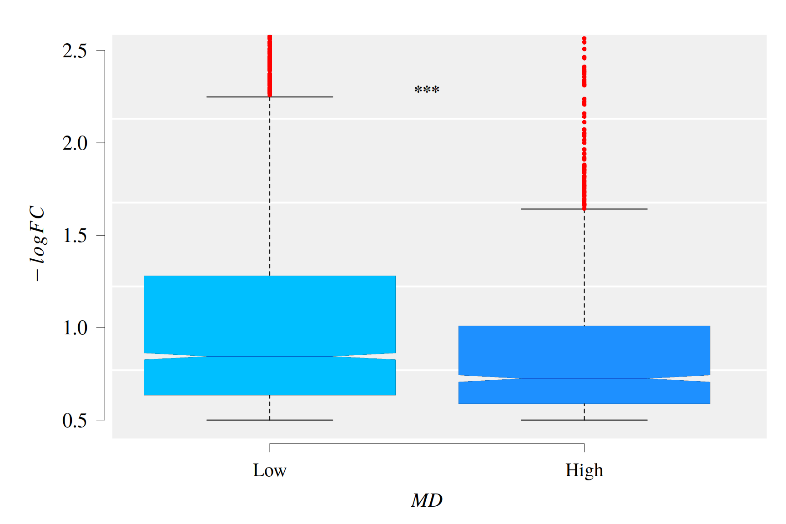
Analysis for up-regulated genes
Data set (II)
.deg_mm1_wt1 <- deg_mm1_wt1[match(names(dmp_den_wt1_mm1), rownames(deg_mm1_wt1)), ] MD <- dmp_den_wt1_mm1$dmp_den # Methylation (|group mean density differences|) idx <- which(.deg_mm1_wt1$table$logFC > 0 ) # Up-regulated logFC <- .deg_mm1_wt1$table$logFC[idx] # Gene Expression (|logFC|) MD <- MD[idx] DataFrame(MD,logFC)
## DataFrame with 6060 rows and 2 columns
## MD logFC
## <numeric> <numeric>
## 1 6.571474 0.0359792
## 2 1.199583 0.5287217
## 3 0.762753 0.1245334
## 4 0.274631 0.0142820
## 5 0.623658 0.4497949
## ... ... ...
## 6056 0.223080 0.317756
## 6057 0.634709 0.394906
## 6058 0.296653 0.943018
## 6059 0.121346 1.680553
## 6060 0.151446 1.921001There are 6060 genes with \(MD > 0\) and \(logFC > 0\) to be included in the downstream analysis.
Distribution of the divergence of methylation level density at gene-body. MM1 vs WT1 (II)
The best fitted model for \(MD\), from comparison MM1 vs WT1, was a mixture of Log-Normal and Weibull distributions.
meth_FIT <- fitMixDist(X = MD, args = list(lnorm = c(meanlog = 2.3, sdlog = 0.7), weibull = c(shape = 0.5, scale = 2)), dens = TRUE, npoints = 900)
## fitting ...
##
|
| | 0%
|
|=================================== | 50%
|
|======================================================================| 100%
## *** Performing nonlinear regression model crossvalidation...summary(meth_FIT$fit)
##
## Parameters:
## Estimate Std. Error t value Pr(>|t|)
## lnorm.meanlog 0.319795 0.009113 35.09 <2e-16 ***
## lnorm.sdlog 0.379847 0.006955 54.62 <2e-16 ***
## weibull.shape 1.874705 0.015719 119.26 <2e-16 ***
## weibull.scale 0.433166 0.002855 151.71 <2e-16 ***
## ---
## Signif. codes: 0 '***' 0.001 '**' 0.01 '*' 0.05 '.' 0.1 ' ' 1
##
## Residual standard error: 0.04895 on 1044 degrees of freedom
## Number of iterations to termination: 29
## Reason for termination: Relative error in the sum of squares is at most `ftol'.cat("\n Mixture proportions (phi):", meth_FIT$phi)
##
## Mixture proportions (phi): 0.4201782 0.5798218The graphic for histogram and density distribution curves:
par(mar = c(4, 4, 2, 1), font.lab=2, font=2,font.axis=2,family="serif" , lwd = 1.2, cex = 1.4) hist(MD, 90, freq = FALSE, las = 1, #ylim = c(0, 0.021), cex = 1, panel.first={points(0, 0, pch=16, cex=1e6, col="grey95") grid(col="white", lty = 1)}, main = text, cex.main = 0.9, xlim = c(0, 5), family = "serif", col = "cyan1", border = "deepskyblue", xaxt ="n", yaxt = "n", ann = FALSE) axis(1, padj = -1, las = 1, lwd = 0.8, tck = -0.02) axis(2, hadj = 0.7, las = 1, lwd = 0.8, tck = -0.02) mtext(side = 1, text = "Divergence of methylation level density at gene-body", line = 1.6, cex = 1.4, font = 3) mtext(side = 2, text = "Density distribution", line = 2.1, cex = 1.4, font = 3) mtext("(Log-Normal & Weibull Mixture Dists.)", cex = 1.4, font = 3) x1 <- seq(0, 10, by = 0.01) lines(x1, dmixtdistr(x1, phi = meth_FIT$phi, arg = meth_FIT$args), col = "blue")

Distribution of the \(|logFC|\). MM1 vs WT1 (II)
The best fitted model for the \(|logFC|\), from comparison MM1 vs WT1, was a mixture of Gamma and Weibull distributions. Function fitMixDist calls the mixture function models set up in function mixtdistr
gexp_FIT <- fitMixDist(X = logFC, args = list(gamma = c(shape = 2, scale = 0.41), weibull = c(shape = 2, scale = 0.4)), dens = TRUE, npoints = 900)
## fitting ...
##
|
| | 0%
|
|=================================== | 50%
|
|======================================================================| 100%
## *** Performing nonlinear regression model crossvalidation...summary(gexp_FIT$fit)
##
## Parameters:
## Estimate Std. Error t value Pr(>|t|)
## gamma.shape 1.043308 0.007147 145.98 <2e-16 ***
## gamma.scale 0.269866 0.007291 37.02 <2e-16 ***
## weibull.shape 1.120625 0.099103 11.31 <2e-16 ***
## weibull.scale 0.979055 0.041551 23.56 <2e-16 ***
## ---
## Signif. codes: 0 '***' 0.001 '**' 0.01 '*' 0.05 '.' 0.1 ' ' 1
##
## Residual standard error: 0.04624 on 791 degrees of freedom
## Number of iterations to termination: 17
## Reason for termination: Relative error in the sum of squares is at most `ftol'.cat("\n Mixture proportions (phi):", gexp_FIT$phi)
##
## Mixture proportions (phi): 0.7545028 0.2454972The graphic for histogram and density distribution curves:
par(mar = c(3, 3, 2, 1), font.lab=2, font=2,font.axis=2,family="serif", lwd = 1.2, cex = 1.4) hist(logFC, 120, freq = FALSE, las = 1, #ylim = c(0, 0.021), cex = 1, panel.first={points(0, 0, pch=16, cex=1e6, col="grey95") grid(col="white", lty = 1)}, main = text, cex.main = 0.9, xlim = c(0, 4), family = "serif", col = "cyan1", border = "deepskyblue", xaxt ="n", yaxt = "n", ann = FALSE) axis(1, padj = -1.5, las = 1, lwd = 0.5, tck = -0.02) axis(2, hadj = 0.4, las = 1, lwd = 0.5, tck = -0.02) mtext(side = 1, text = expression(italic(abs(logFC))), line = 1.3, cex = 1.4, font = 3) mtext(side = 2, text = "Density distribution", line = 1.6, cex = 1.4, font = 3) mtext("(Gamma & Weibull Mixture Dists.)", cex = 1.4, font = 3) x1 <- seq(0, 10, by = 0.01) lines(x1, dmixtdistr(x1, phi = gexp_FIT$phi, arg = gexp_FIT$args), col = "blue")
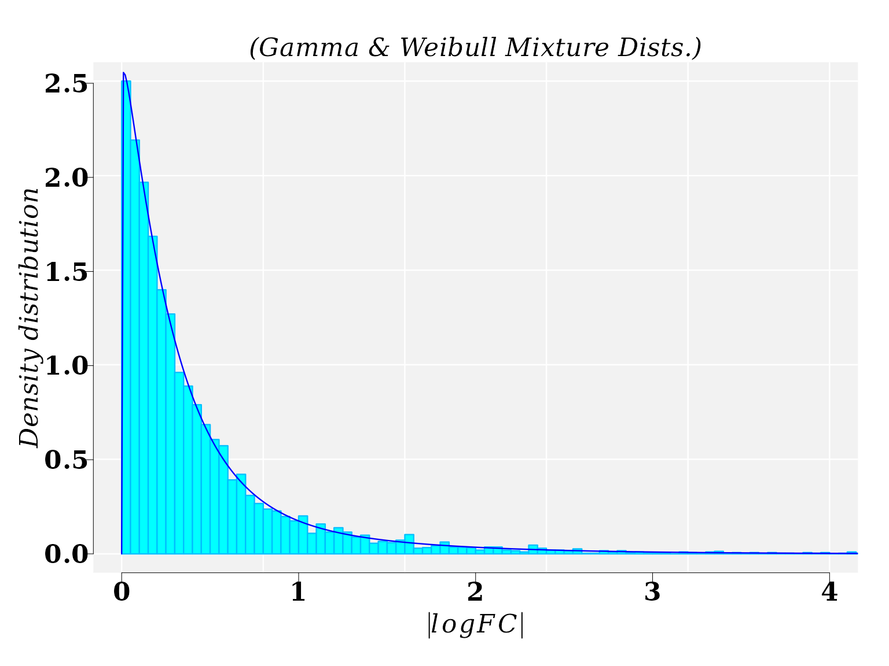
Joint distribution of \(MD\) and \(|logFC|\) expressed in terms of Copula distribution (II)
Fitting Farlie–Gumbel–Morgenstern copulas with \(MD\) and \(|logFC|\) marginal CDFs (II)
The first step requires for provide the parameters values, previously estimated, of the marginal distributions, which were given throughout the function mixtdistr. The specific parameter values are retrieved from the previous nonlinear fit obtained for the marginal CDFs:
margins = c("mixtdistr", "mixtdistr") parMargins = list( list(phi = meth_FIT$phi, arg = meth_FIT$args), list(phi = gexp_FIT$phi, arg = gexp_FIT$args))
The parameter estimation and goodness-of-fit (GOF) test take advantage of the tools available in the R package copula. Both, parameter estimation and GOF, can be accomplished with function bicopulaGOF from the R package usefr.
fgm_cop <- bicopulaGOF(x = MD, y = logFC, copula = "fgmCopula", sample.size = 5999, margins = margins, paramMargins = parMargins, nboots = 10, approach = "chisq", breaks = 30, num.cores = 6L, seed = 123, verbose = FALSE)
The null hypothesis that the data follows FGM copula distribution is not rejected.
fgm_cop$gof
## Chisq.stat mc_p.value sample.size num.sampl
## 924.4173422 0.1818182 5999.0000000 10.0000000All the information needed about the fitted FGM copula is found in the object fgm_cop$copula, which is a mvdc object from copula package with several slots. In particular, the specific information about FGM copula is found in:
fgm_cop$copula@copula
## Farlie-Gumbel-Morgenstern (FGM) copula, dim. d = 2
## param.: -0.492
## Dimension: 2
## Parameters:
## alpha1.2 = -0.4915949P-P plot. Graphical Diagnostics of GOF (II)
The P-P plot is build with function ppCplot from the R package usefr. If the GOF is good enough, then it is expected that points in the graphics are closed to the diagonal (red) straight line. Details on how the computation is performed are provided in the help for function. ppCplot.
g <- ppCplot(X = MD, Y = logFC, copula = fgm_cop$copula, npoints = 500, col = "blue", cex = 0.5)
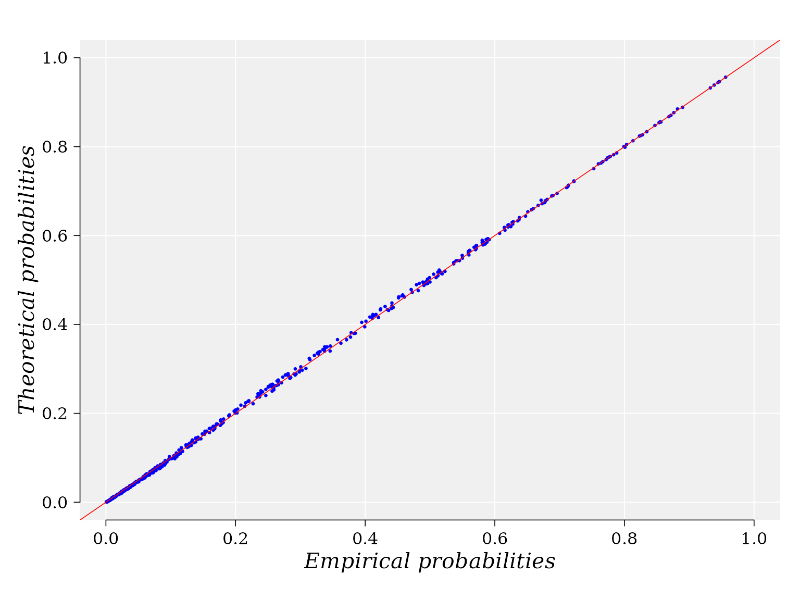
Information on the data and copula used to yield the graphic are stored in the output variable “g”. For example, the empirical and theoretical probabilities used to built the graphic can be retrieved from the data frame: “g$data”:
DataFrame(g$data)
## DataFrame with 500 rows and 2 columns
## emprob thprob
## <numeric> <numeric>
## 1 0.143069 0.1382994
## 2 0.253135 0.2462899
## 3 0.185149 0.1788541
## 4 0.102640 0.0999548
## 5 0.217327 0.2153326
## ... ... ...
## 496 0.127888 0.130328
## 497 0.320792 0.325585
## 498 0.400660 0.402742
## 499 0.209736 0.215686
## 500 0.166007 0.163257Three-dimentional copula density plot (II)
The domain region \((X, Y)\) is defined and function dMvdc is used to compute the density \(z\) in the grid \([X,Y] \times [X,Y]\) using the previous FMG fitted copula.
X = seq(0, 1.5, length = 100) Y = seq(0, 1.8, length = 100) sp_rho <- round(rho(fgm_cop$copula@copula),3) # Spearman' s rho: -0.171 z <- outer(X, Y, function(x,y) dMvdc(cbind(x,y),fgm_cop$copula)) * 4 phi = 15; theta = 45 sp_rho
## [1] -0.164An auxiliary function to draw the panels
panelfirst <- function(pmat) { par(mfrow = c(1, 1),mar=c(4,7,0, 1), font=2,lwd = 0.01, cex =1, family = "serif") YZ <- trans3D(x = rep(0, ncol(z)), Y, z[18,], pmat = pmat) scatter2D(YZ$x, YZ$y, colvar = z[18,], lwd = 1, type = "l", add = TRUE, colkey = FALSE) XZ <- trans3D(x = X, y = rep(max(Y), nrow(z)), z = z[, 12], pmat = pmat) scatter2D(XZ$x, XZ$y, colvar = z[, 12], lwd = 1, type = "l", add = TRUE, colkey = FALSE) }
The graphical settings depend on the final printing destiny and on the dataset.
par(mfrow = c(1, 1),mar=c(4,7,0, 1), font=2,lwd = 0.1, cex =1, family = "serif") persp3D(X, Y, z, lwd = 0.01, image = TRUE, xlab = "", ylab = "", zlab = "", family = "serif", box = T, panel.first = panelfirst, bty = "u", col.panel = "steelblue", col.grid = "black", lwd.grid = 0.5, contour = list(col = "black", side = "zmin", lwd = 0.4), ticktype = "detailed", clab = "", expand = 0.7, d = 2, phi = phi, theta = theta, resfac = 2.5, cex.lab = 1, lwd = 0.005, xlim = c(0, 1.5), zlim = c(-5, 9), font=2, cex.axis = 1.2, colkey = list(length = 0.5, width = 0.6, col.ticks = "black", lwd = 0.01, font=2, shift = 0, dist = 0, lwd.ticks = 0.01, cex.clab = 1.2, cex.axis = 1, line = -0.8)) text(0.38,-0.4, srt = 38, labels = expression(paste("|", italic(log[2]), italic(FC), "|")), xpd = TRUE,font = 2, cex = 1.2) text(-0.41,-0.39, srt = -20, labels = expression(paste(italic("MD"))), xpd = TRUE, font=2, cex = 1.2) text(-0.36,-0.5, srt = 0, labels = expression(paste("Spearman' s ", italic(rho), ": ", -0.164)), xpd = TRUE, font = 1, cex = 1)
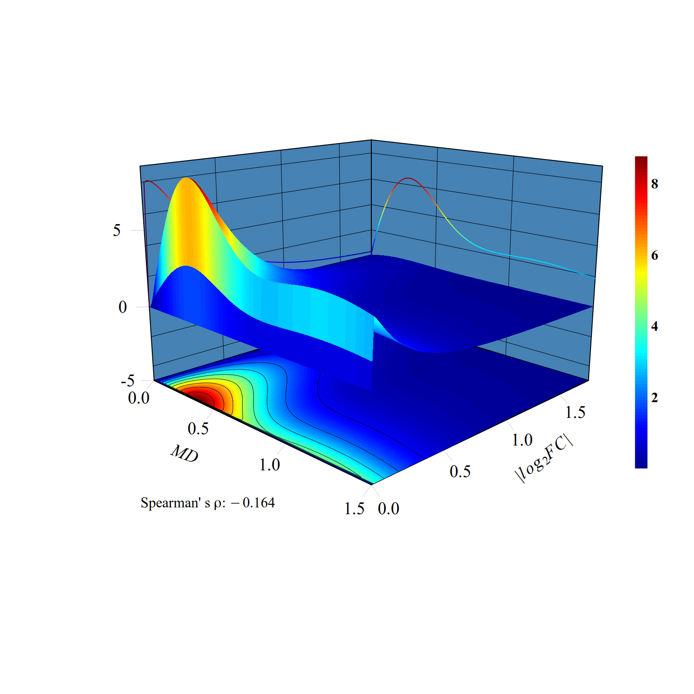
The marginal distributions are drawn in the \(XZ\) and \(YZ\) vertical planes. Consistent with the Spearman’ s \(\rho=-0.164\), for a fixed value of \(|log_2FC|\), (a line parallel to \(MD\) axis) the joint probability density distribution function \(f(X \leq MD, Y \leq log_2FC)\) decreasses with the increment of \(MD\). That is, the probability to observe DEGs with values, say between 0.1 and 0.5,
\(0.1 \leq log_2FC \leq 0.5\), is greater for \(0.1 \leq MD \leq 0.5\) than for \(0.5 < MD \leq 1\).
Two-dimensional copula density plot, Contour plot (II)
The 2D-dimensional plot permits to see in more detail the projection of the density surface on the \(XY\) plane and contour lines.
It is not difficult to see that for a fixed value of \(MD\) (a line parallel to \(|log_2FC|\) axis) the joint probability density distribution function \(f(X \leq MD, Y \leq |log_2FC|)\) (color gradient from red to blue) decreasses with the increment of \(|log_2FC|\). That is, the probability to observe \(MD\) values, say between 0.1 and 0.5 (see the squared region below) \(0.1 \leq MD \leq 0.5\), is greater for \(0.1 \leq |log_2FC| \leq 0.5\) than for \(0.5 < |log_2FC| \leq 1\).
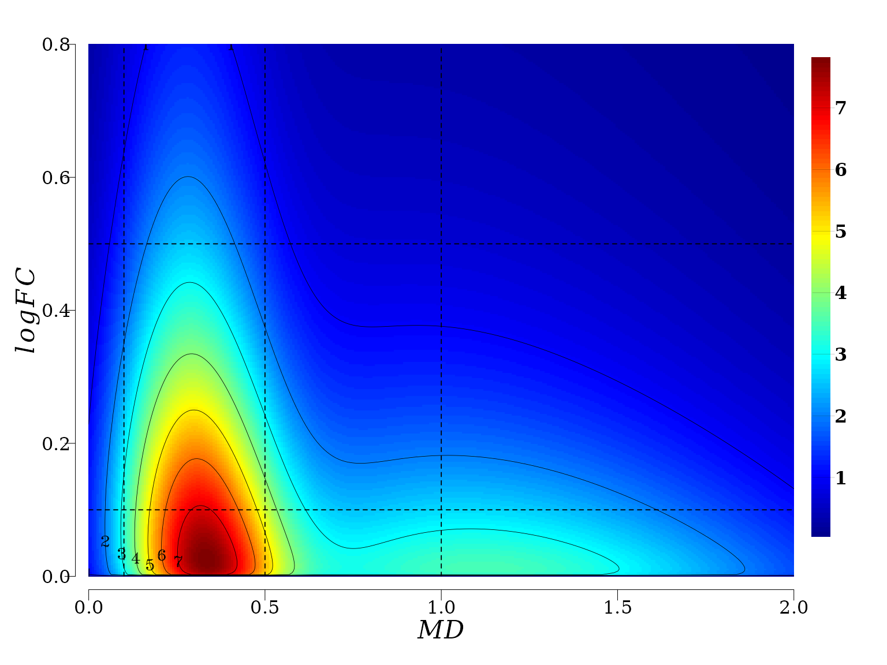
In summary, gene expression and methylation processes are not independent in memory line first generation. There exist an stochastic deterministic dependence between \(|log_2FC|\) and \(MD\) that can be expressed in terms joint probability distribution, which leads to an inverse relationship between the conditioned expected values \(|log_2FC|\) given \(MD\), and vice versa.
Asymptotic linear-by-linear association test (II)
As in the previous case (above), tt is obvious from the 2D density plots that for \(MD\) < 0.08 the any relationship is not meaningful. In particular, both variables, \(logFC\) and \(MD\), are at the level of technical noise. The percentage of the genes at noise level are:
## [1] 1.42The genes for the downstream analysis are:
idx <- which(MD > 0.08) md <- MD[ idx] logfc <- logFC[ idx ] dt <- data.frame(md = md , logfc = logfc) nrow(dt)
## [1] 5974Discretization of \(MD\) and \(logFC\) (II)
# ------------------- Auxiliary function for discretization ------------------ # Kmean.discretization <- function(x, categories, algorithm = "Hartigan-Wong", iter.max = 10^6, column = 1L) { centers <- kmeans(x, centers = categories, algorithm = algorithm, iter.max = iter.max)$centers # order the centers centers <- sort(centers) cl <- stats::kmeans(stats::na.omit(x), centers = centers, algorithm = algorithm, iter.max = iter.max ) return( data.frame(x, cluster = cl$cluster) ) }
Discretization for \(MD\) (II)
cl = Kmean.discretization(md, categories = 3, algorithm = "MacQueen" ) cl_summary <- sapply(1:3, function(k) summary(cl$x[cl$cluster == k])) colnames(cl_summary) <- c("low", "middle", "high") cl_summary
## low middle high
## Min. 0.0809488 0.9703714 2.348914
## 1st Qu. 0.2543436 1.1740022 2.546431
## Median 0.3925193 1.4335135 2.922496
## Mean 0.4465135 1.4933123 3.204277
## 3rd Qu. 0.6216258 1.7647503 3.509952
## Max. 0.9683489 2.3473622 10.496433Cutpoint are now applied:
Discretization for \(logFC\) (II)
cl = Kmean.discretization(logfc, categories = 3, algorithm = "MacQueen" ) cl_summary <- sapply(1:3, function(k) summary(cl$x[cl$cluster == k])) colnames(cl_summary) <- c("eLow", "eMiddle", "eHigh") cl_summary
## eLow eMiddle eHigh
## Min. 3.772575e-05 0.6448911 2.052246
## 1st Qu. 8.178209e-02 0.7713312 2.324534
## Median 1.865436e-01 0.9716668 2.575225
## Mean 2.257154e-01 1.0636271 3.027001
## 3rd Qu. 3.430369e-01 1.2671241 3.394137
## Max. 6.443115e-01 2.0306128 7.945112The contingency table and its graphic visualization (II)
In the current case, the contingency table suggests an obvious relationship between \(|logFC|\) and \(MD\).
##
## Low Middle High
## eLow 2721 1676 355
## eMiddle 795 210 59
## eHigh 128 24 6The spineplot of this contingency table (table(x = logfc_level, y = md_level)) help to visualize the existent relationship between \(|logFC|\) and \(MD\).
par( mar = c(5, 7, 4, 4), family = "Serif", font = 2, cex = 0.8, las = 1, lwd = 0.2 ) tb <- spineplot(m[, c(3,2,1)], col = c( "blue", "dodgerblue","deepskyblue" ), xlab = "", ylab = "") mtext(side = 1, text = expression(italic(logFC)), line = 2.5, cex = 1, font = 3) mtext(side = 2, text = expression(paste(italic("MD"))), line = 4, cex = 1, font = 3) abline(a = 0.0, b = 0.72, col = "white", lty = "dashed", lwd = 1)
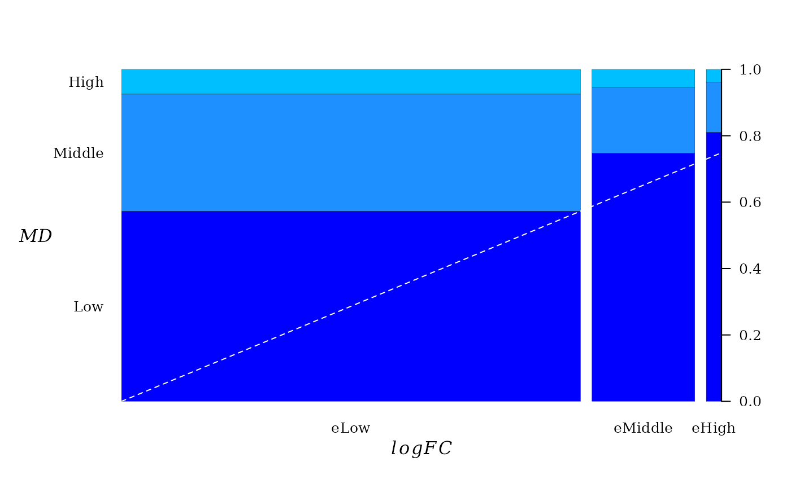
A dashed line was added to emphasize the direction of linear trend. From “Low” to “high” there seems to be a linear relationship between pairwise proportion of \(|logFC|\) and \(MD\).
Conceptually, the spineplot is a plot of the conditional probability \(P(y|x)\) against \(P(x)\). Since the joint probability distribution of these variable is described by a FGM copula, a linear relationship between \(P(y|x)\) against \(P(x)\) must be expected, which is a property of FGM copula (Balakrishna and Lai 2009).
Testing association between \(logFC\) and \(MD\) (II)
Here, we use the LLT test implemented in function lbl_test from the R package coin. Two test variants are available: 1) permutation test and asymptotic test.
The asymptotic LLT test:
lbl_test( m )
##
## Asymptotic Linear-by-Linear Association Test
##
## data: Var2 (ordered) by Var1 (eLow < eMiddle < eHigh)
## Z = -10.163, p-value < 2.2e-16
## alternative hypothesis: two.sidedThe permutation LLT test:
lbl_test( m, distribution = "approximate", B = 10000, alternative = "less" )
##
## Approximative Linear-by-Linear Association Test
##
## data: Var2 (ordered) by Var1 (eLow < eMiddle < eHigh)
## Z = -10.163, p-value < 1e-04
## alternative hypothesis: lessThe null hypothesis of no association among the variables in the table is rejected. In the current case the \(p-value < 1e-04\) and, hence, we do not have enough evidence to support the null hypothesis.
Generalized linear model (GLM) (II)
The variable \(MD\) is split int three levels, 0:“Low” (\(0 < MD \leq 0.5\)), 1:“Middle” (\(0.5 < MD \leq 1\)), and 2:“High” ($1 < MD $)
meth_cut1 <- 0.5 meth_cut2 <- 1.2 xy <- cbind(MD, logFC) idx <- which(logFC > 0.5) xy <- data.frame(xy[idx, ]) xy$md <- 0 xy$md[xy$MD > meth_cut1] <- 1 xy$md[xy$MD > meth_cut2] <- 2
The glm support the decrease of \(-logFC\) with the increment of \(MD\). The model coefficients are higly statistically significant.
##
## Call:
## glm(formula = logFC ~ md, family = Gamma(link = "identity"),
## data = xy)
##
## Deviance Residuals:
## Min 1Q Median 3Q Max
## -0.7559 -0.5068 -0.2627 0.1476 2.9485
##
## Coefficients:
## Estimate Std. Error t value Pr(>|t|)
## (Intercept) 1.18737 0.02644 44.915 < 2e-16 ***
## md -0.10495 0.02264 -4.635 3.84e-06 ***
## ---
## Signif. codes: 0 '***' 0.001 '**' 0.01 '*' 0.05 '.' 0.1 ' ' 1
##
## (Dispersion parameter for Gamma family taken to be 0.490523)
##
## Null deviance: 532.96 on 1702 degrees of freedom
## Residual deviance: 522.93 on 1701 degrees of freedom
## AIC: 2751.1
##
## Number of Fisher Scoring iterations: 4The ANOVA test confirm the negative trend given by the coefficient of MD (highly statistically significant).
anova(gm, test = "LRT")
## Analysis of Deviance Table
##
## Model: Gamma, link: identity
##
## Response: logFC
##
## Terms added sequentially (first to last)
##
##
## Df Deviance Resid. Df Resid. Dev Pr(>Chi)
## NULL 1702 532.96
## md 1 10.034 1701 522.93 6.106e-06 ***
## ---
## Signif. codes: 0 '***' 0.001 '**' 0.01 '*' 0.05 '.' 0.1 ' ' 1GLM group I (“Low” \(MD\)) versus group II (“Middle” \(MD\)) (II)
Only genes with \(MD < 1\) are analyzed. That is, only two groups are considered: 0:“Middle” (\(0.5 < MD \leq 1\)), and 1:“High” ($1 < MD $)
dt <- xy[xy$MD < meth_cut2, ] dt$md <- 0 dt$md[ dt$MD > meth_cut1 ] <- 1 gm <- glm(formula = logFC ~ md, data = dt, family = Gamma(link = "identity")) summary( gm )
##
## Call:
## glm(formula = logFC ~ md, family = Gamma(link = "identity"),
## data = dt)
##
## Deviance Residuals:
## Min 1Q Median 3Q Max
## -0.7587 -0.5299 -0.2535 0.1411 2.9756
##
## Coefficients:
## Estimate Std. Error t value Pr(>|t|)
## (Intercept) 1.19166 0.02834 42.049 < 2e-16 ***
## md -0.12276 0.04503 -2.726 0.00649 **
## ---
## Signif. codes: 0 '***' 0.001 '**' 0.01 '*' 0.05 '.' 0.1 ' ' 1
##
## (Dispersion parameter for Gamma family taken to be 0.4971405)
##
## Null deviance: 430.00 on 1342 degrees of freedom
## Residual deviance: 426.45 on 1341 degrees of freedom
## AIC: 2291.1
##
## Number of Fisher Scoring iterations: 3cat("\n =============== The ANOVA test =============== \n\n")
##
## =============== The ANOVA test ===============anova(gm, test = "LRT")
## Analysis of Deviance Table
##
## Model: Gamma, link: identity
##
## Response: logFC
##
## Terms added sequentially (first to last)
##
##
## Df Deviance Resid. Df Resid. Dev Pr(>Chi)
## NULL 1342 430.00
## md 1 3.5479 1341 426.45 0.007552 **
## ---
## Signif. codes: 0 '***' 0.001 '**' 0.01 '*' 0.05 '.' 0.1 ' ' 1GLM group II (“Middle” \(MD\)) versus group III (“High” \(MD\)) (II)
Only genes with \(MD < 1\) are analyzed. That is, only two groups are considered: 0:“Low” (\(0 < MD \leq 0.5\)), 1:“Middle” (\(0.5 < MD \leq 1\)).
dt <- xy[xy$MD > meth_cut1, ] dt$md <- 0 dt$md[ dt$MD > meth_cut2 ] <- 1 gm <- glm(formula = logFC ~ md, data = dt, family = Gamma(link = "identity")) summary( gm )
##
## Call:
## glm(formula = logFC ~ md, family = Gamma(link = "identity"),
## data = dt)
##
## Deviance Residuals:
## Min 1Q Median 3Q Max
## -0.6729 -0.4812 -0.2722 0.1356 2.9756
##
## Coefficients:
## Estimate Std. Error t value Pr(>|t|)
## (Intercept) 1.06890 0.03514 30.419 <2e-16 ***
## md -0.08433 0.05084 -1.659 0.0976 .
## ---
## Signif. codes: 0 '***' 0.001 '**' 0.01 '*' 0.05 '.' 0.1 ' ' 1
##
## (Dispersion parameter for Gamma family taken to be 0.5014626)
##
## Null deviance: 238.85 on 823 degrees of freedom
## Residual deviance: 237.48 on 822 degrees of freedom
## AIC: 1171.9
##
## Number of Fisher Scoring iterations: 3cat("\n =============== The ANOVA test =============== \n\n")
##
## =============== The ANOVA test ===============anova(gm, test = "LRT")
## Analysis of Deviance Table
##
## Model: Gamma, link: identity
##
## Response: logFC
##
## Terms added sequentially (first to last)
##
##
## Df Deviance Resid. Df Resid. Dev Pr(>Chi)
## NULL 823 238.85
## md 1 1.3641 822 237.48 0.09908 .
## ---
## Signif. codes: 0 '***' 0.001 '**' 0.01 '*' 0.05 '.' 0.1 ' ' 1Boxplot (II)
The boxplot suggest a clear trend of \(-logFC\) decreasing with increment of MD levels. Notice that the notchs from the boxes do not overlap, which implies that the differences between medians from three groups (“Low”, “Middle”, and “High”) are statistically significant. So, the GLM results can be visualized.
par(bty = "n", family = "serif", font = 2, cex = 1, lwd = 0.1) boxplot(logFC ~ md, data = xy, ylim = c(0.4, 2.5), xaxt ="n", yaxt = "n", ann = FALSE) rect(0.5, 0.4, 3.5, 5, col = "grey94", lty = 0, lwd = 1) grid(0, 5, col = "white", lwd = 2, lty = 1) boxplot(logFC ~ md, data = xy, ylim = c(0.4, 2.5), notch = TRUE, xaxt ="n", yaxt = "n", ann = FALSE, pch = 20, medcol = "darkblue", whisklwd = 1, staplelwd = 1, col = c("deepskyblue", "dodgerblue", "dodgerblue3" ), outcol = "red", add = TRUE) axis(1, padj = -0.6, at = 1:3, lwd = 0.5, tck = -0.02, line = -0.6, cex.axis = 1.3, labels = c("Low", "Middle", "High")) axis(2, hadj = 0.6, las = 1, lwd = 0.5, tck = -0.02, line = -1, cex.axis = 1.3) mtext(side = 1, text = expression(paste(italic("MD"))), line = 1.3, cex = 1.4, font = 3) mtext(side = 2, text = expression(italic(-logFC)), line = 1, cex = 1.4, font = 3) text(x = 1.5, y = 2.2, "**", pos = 3, cex = 1.2 )
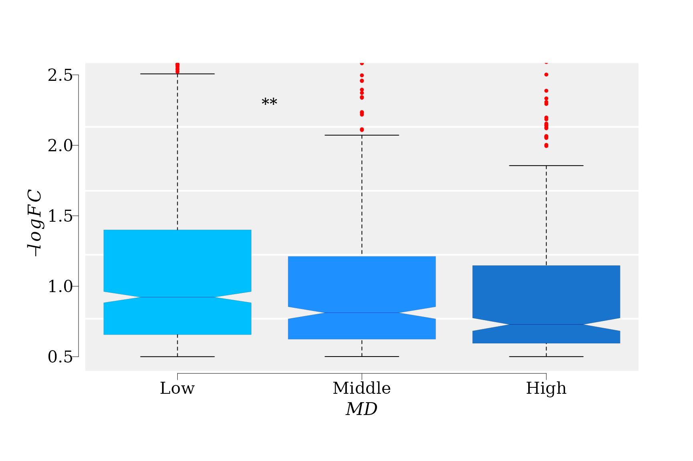
References
Agresti, Alan. 2007. An Introduction to Categorical Data Analysis. John Wiley & Sons, Inc. https://doi.org/10.1002/9780470114759.ch2.
Balakrishna, N, and Chin Diew Lai. 2009. Distributions Expressed as Copulas. New York, NY: Springer New York. https://doi.org/10.1007/b101765_3.
Christian, Genest, and Anne-catherine Favre. 2007. “Everything You Always Wanted to Know about Copula Modeling but Were Afraid to Ask.” J HYDROL ENG 12 (4): 347–68. https://doi.org/10.1061/?ASCE?1084-0699?2007?12:4?347.
Sklar, Abe. 1959. “Fonctions de répartition à n dimensions et leurs marges.” Publ. Inst. Statist. Univ. Paris 8: 229–31.
———. 1973. “Random Variables, Joint Distribution Functions, and Copulas.” Kybernetika 9 (6): 449–60.
Yang, Xiaodong, Robersy Sanchez, Hardik Kundariya, Tom Maher, Isaac Dopp, Rosemary Schwegel, Kamaldeep Virdi, Michael J Axtell, and Sally A Mackenzie. 2020. “Segregation of an MSH1 RNAi transgene produces heritable non-genetic memory in association with methylome reprogramming.” Nature Communications 11 (1): 2214. https://doi.org/10.1038/s41467-020-16036-8.
Session info
Here is the output of sessionInfo() on the system on which this document was compiled running pandoc 2.7.3:
## R version 4.0.0 (2020-04-24)
## Platform: x86_64-pc-linux-gnu (64-bit)
## Running under: Ubuntu 18.04.4 LTS
##
## Matrix products: default
## BLAS: /usr/lib/x86_64-linux-gnu/blas/libblas.so.3.7.1
## LAPACK: /usr/lib/x86_64-linux-gnu/lapack/liblapack.so.3.7.1
##
## locale:
## [1] LC_CTYPE=en_US.UTF-8 LC_NUMERIC=C
## [3] LC_TIME=en_US.UTF-8 LC_COLLATE=en_US.UTF-8
## [5] LC_MONETARY=en_US.UTF-8 LC_MESSAGES=en_US.UTF-8
## [7] LC_PAPER=en_US.UTF-8 LC_NAME=C
## [9] LC_ADDRESS=C LC_TELEPHONE=C
## [11] LC_MEASUREMENT=en_US.UTF-8 LC_IDENTIFICATION=C
##
## attached base packages:
## [1] parallel stats4 stats graphics grDevices utils datasets
## [8] methods base
##
## other attached packages:
## [1] coin_1.3-1 survival_3.1-12 copula_1.0-0
## [4] plot3D_1.3 usefr_0.1.0 edgeR_3.30.3
## [7] limma_3.44.1 ggplot2_3.3.1 GenomicRanges_1.40.0
## [10] GenomeInfoDb_1.24.0 IRanges_2.22.2 S4Vectors_0.26.1
## [13] BiocGenerics_0.34.0
##
## loaded via a namespace (and not attached):
## [1] splines_4.0.0 assertthat_0.2.1 GenomeInfoDbData_1.2.3
## [4] nls2_0.2 yaml_2.2.1 numDeriv_2016.8-1.1
## [7] pillar_1.4.4 backports_1.1.7 lattice_0.20-41
## [10] glue_1.4.1 digest_0.6.25 XVector_0.28.0
## [13] sandwich_2.5-1 colorspace_1.4-1 htmltools_0.4.0
## [16] Matrix_1.2-18 pcaPP_1.9-73 pkgconfig_2.0.3
## [19] misc3d_0.8-4 zlibbioc_1.34.0 purrr_0.3.4
## [22] mvtnorm_1.1-1 scales_1.1.1 BiocParallel_1.22.0
## [25] tibble_3.0.1 ADGofTest_0.3 generics_0.0.2
## [28] ellipsis_0.3.1 TH.data_1.0-10 withr_2.2.0
## [31] magrittr_1.5 crayon_1.3.4 mclust_5.4.6
## [34] memoise_1.1.0 evaluate_0.14 fs_1.4.1
## [37] mixdist_0.5-5 MASS_7.3-51.6 gsl_2.1-6
## [40] tools_4.0.0 multcomp_1.4-13 matrixStats_0.56.0
## [43] minpack.lm_1.2-1 lifecycle_0.2.0 pspline_1.0-18
## [46] stringr_1.4.0 munsell_0.5.0 locfit_1.5-9.4
## [49] stabledist_0.7-1 compiler_4.0.0 pkgdown_1.5.1
## [52] rlang_0.4.6 grid_4.0.0 RCurl_1.98-1.2
## [55] rstudioapi_0.11 bitops_1.0-6 rmarkdown_2.2
## [58] codetools_0.2-16 gtable_0.3.0 R6_2.4.1
## [61] zoo_1.8-8 knitr_1.28 dplyr_1.0.0
## [64] libcoin_1.0-5 rprojroot_1.3-2 desc_1.2.0
## [67] modeltools_0.2-23 stringi_1.4.6 Rcpp_1.0.4.6
## [70] vctrs_0.3.1 tidyselect_1.1.0 xfun_0.14